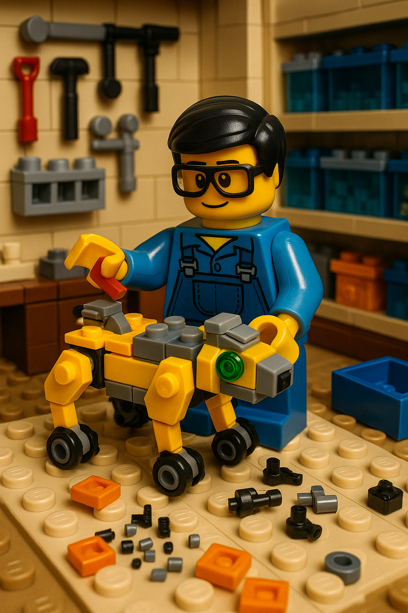

Mi experiencia en el curso de IA
Durante este curso he descubierto el enorme potencial de la inteligencia artificial en la educación y en la vida cotidiana. He aprendido a crear páginas web, generar imágenes y videos, y a utilizar herramientas de IA para resolver problemas y potenciar mi creatividad. La posibilidad de interactuar con asistentes inteligentes y de automatizar tareas me ha motivado a seguir explorando este fascinante campo.

Reflexiones sobre la IA
- ¿Qué cosas me sorprenden? La capacidad de la IA para aprender, adaptarse y generar contenido creativo, como imágenes, textos y hasta música. Me asombra cómo puede analizar grandes volúmenes de datos y encontrar patrones útiles en segundos.
- ¿Qué me preocupa? El uso irresponsable de la IA, la desinformación y la posible pérdida de empleos. Sugiero que se promueva la ética, la transparencia y la educación digital para un mejor futuro.
- Mis retos personales: Adaptarme al ritmo acelerado de los cambios tecnológicos, aprender a programar y mantenerme actualizado. La clave es la curiosidad y la práctica constante.
“Never summon a power you can’t control.” Yuval Noah Harari advierte que la IA es una tecnología sin precedentes, capaz de tomar decisiones y crear ideas por sí misma, lo que representa un riesgo para la democracia y la cooperación global.

Extracto y foto de: Yuval Noah Harari, The Guardian, 2024
"Si la única herramienta que tienes es un martillo, verás todos los problemas como clavos" .
Video de: Las claves educativas en la era de la inteligencia artificial. Kai-Fu Lee, experto IA
Links útiles y páginas recomendadas
Creatividad y progreso con IA
Ideas creativas para usar IA en educación
- Creación de asistentes virtuales personalizados para estudiantes.
- Generación automática de ejercicios y tests adaptativos.
- Visualización de datos educativos con gráficos interactivos.
- Simulaciones y laboratorios virtuales con IA.
Imágenes generadas con IA

Mini test interactivo sobre IA
¿Cuál es una de las principales ventajas de la IA en la educación?
Video generado con IA
(Puedes subir tu video generado con IA a tu repositorio y enlazarlo aquí)
Textos inspiradores
"La inteligencia artificial no reemplazará a los maestros, pero los maestros que usen IA reemplazarán a los que no lo hagan."